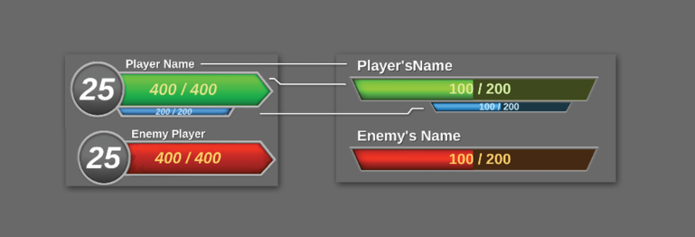
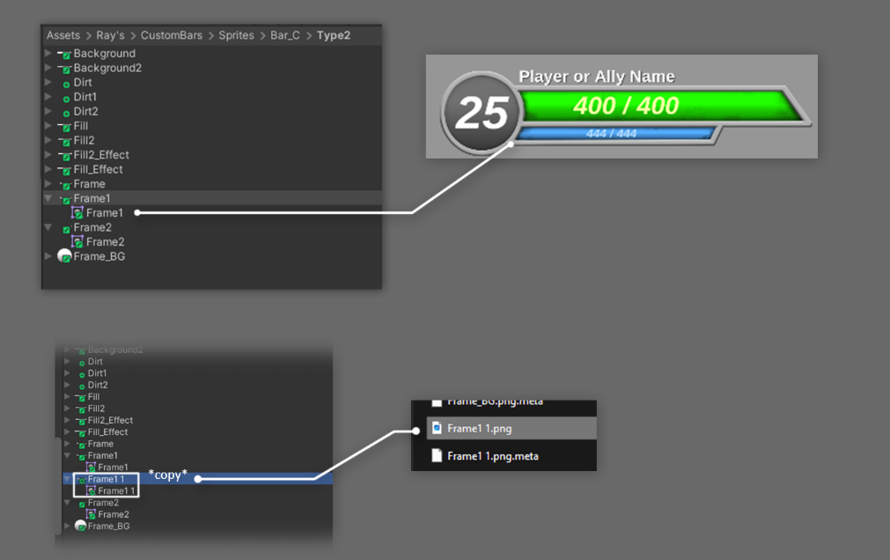
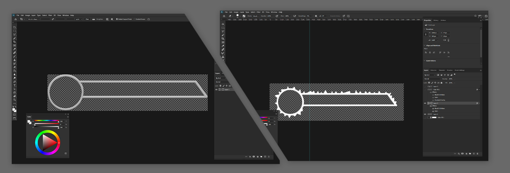
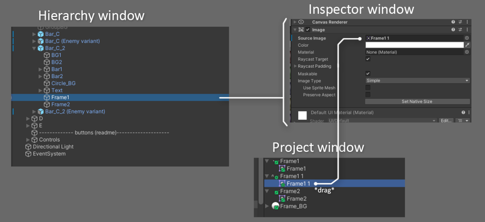
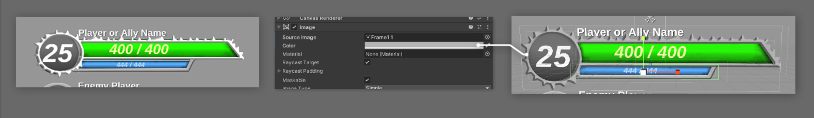
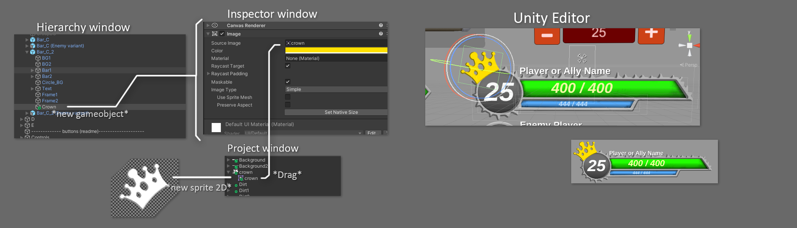

CustomBars is a collection of customizable stats bars that includes seven unique variations for integration into your Unity project. Designed to streamline the process of implementing UI elements such as health bars, mana bars, and more, this package provides a convenient solution with 20 pre-built prefabs.
Each variation comes with a range of customizable elements, including colors, sprites, texts, and icons, allowing you to tailor the UI to your specific needs.
CustomBars simplifies your game development process and enhance your user interface.
The package contents are organized within the folder Rays/CustomBars/
A demo scene within CustomBars folder showcases the variations along with interactive controls for manipulating the bars.
The easiest way to import an asset from Asset Store is by using Unity's Package Manager window:
After completing these steps, you should be able to utilize the CustomBars asset - or any other asset you may adquire later - in your project.
Note: you can also import packages manually, check on Unity docs for more information
To utilize CustomBars asset effectively, ensure that you meet the following basic requirements:
The demo scene showcases the functionality of Custombars’ through interactive controls. Follow these instructions to utilize the controls effectively:
Right below the slider, two buttons labeled as "-" and "+".
There are two main ways of incorporating CustomBars into your project: by directly referencing the bar into your script, or by setting an action event.
using UnityEngine;
using CustomBars; // Don't forget to add this namespace
// or you won't be able to reference the CustomBars classes.
// Or instead, you can reference the namespace before the class on each line you need
// (Ex: "public CustomBars.CustomBar_A" or "GetComponent<CustomBars.CustomBar_A")
public class Implementation_Test : MonoBehaviour
{
// Public reference
public CustomBar_E customBar_E;
float maxHealth = 200;
float currentHealth;
float maxMana = 100;
float currentMana;
void Start()
{
// Primary Bar
currentHealth = maxHealth;
customBar_E.SetMaxValue(maxHealth);
customBar_E.SetCurrentValue(currentHealth);
// Secondary Bar
currentMana = maxMana;
customBar_E.SetMaxValue2(maxMana);
customBar_E.SetCurrentValue2(currentMana);
}
// Get damage and subtract the currentHealth
void TakeDamage(float damage)
{
currentHealth -= damage;
customBar_E.SetCurrentValue(currentHealth);
}
// subtract mana points
void SpendMana(float value)
{
currentMana -= value;
customBar_E.SetCurrentValue2(currentMana);
}
}
using UnityEngine;
using System; // Necessary for using action events
using CustomBars; // Don't forget to add this namespace
// or you won't be able to reference the CustomBars classes.
// Or instead, you can reference the namespace before the class on each line you need
// (Ex: "public CustomBars.CustomBar_A" or "GetComponent<CustomBars.CustomBar_A")
public class Implementation_Test2 : MonoBehaviour
{
// Action Events are able to send data like ints, floats, strings, bools
public event Action<float> OnSetMaxHP;
public event Action<float> OnSetCurrentHP;
public event Action<float> OnSetMaxMana;
public event Action<float> OnSetCurrentMana;
// Using "public static event Action" eliminates the need for references,
// but may result in unintended consequences when multiple agents affect the same bar.
// In such cases, it's preferable to use explicit references to maintain control over each agent's interaction.
public CustomBar_E customBar_E;
float maxHealth = 200;
float currentHealth;
float maxMana = 100;
float currentMana;
void Start()
{
// Primary Bar
currentHealth = maxHealth;
OnSetMaxHP?.Invoke(maxHealth); // The "?." only triggers the event if it's being listened somewhere
OnSetCurrentHP?.Invoke(currentHealth);
// Secondary Bar
currentMana = maxMana;
OnSetMaxMana?.Invoke(maxMana);
OnSetCurrentMana?.Invoke(currentMana);
}
// Get damage and subtract the currentHealth
void TakeDamage(float damage)
{
currentHealth -= damage;
customBar_E.SetCurrentValue(currentHealth);
}
// subtract mana points
void SpendMana(float value)
{
currentMana -= value;
customBar_E.SetCurrentValue2(currentMana);
}
}
After creating the Action Events, a final step need to be done in order for it to work:
public class CustomBar_E : MonoBehaviour
{...
////////////////////////////////
//// MonoBehavior functions ////
////////////////////////////////
public Implementation_Example2 implementation_Example2; // Script containing the action events
void OnEnable() // Subscribing to events
{
if (implementation_Example2 != null)
{
implementation_Example2.OnSetMaxHP += SetMaxValue;
implementation_Example2.OnSetCurrentHP += SetCurrentValue;
implementation_Example2.OnSetMaxMana += SetMaxValue2;
implementation_Example2.OnSetCurrentMana += SetCurrentValue;
}
}
void OnDisable() // Unsubscribe to avoid unwanted behaviors
{
if (implementation_Example2 != null)
{
implementation_Example2.OnSetMaxHP -= SetMaxValue;
implementation_Example2.OnSetCurrentHP -= SetCurrentValue;
implementation_Example2.OnSetMaxMana -= SetMaxValue2;
implementation_Example2.OnSetCurrentMana -= SetCurrentValue;
}
}
...
}
That being done, the Action event OnSetMaxHP should now update the SetMaxValue function, that will update the max value of the first bar of the chosen Custombar. The same applies to the other events and their respective functions.
The code of each script of Custombar is organized into four main sections of functions, for ease of understanding. Each of the 7 variations might have their own differences like extra functions and variables, but they still follow the same structure:
OnEnable() | OnDisable() - for subscribing and unsubscribing to events.OnValidate() - allow changes and updates to be seen on editor without starting the game. You can disable it in case errors and warnings are showing up in the console while in editor mode.Start() | Update() - Used for basic functioning of the Custombars.RefreshBar() - Starts the bars updating, allowing them to update and refresh their values, while triggering the cooldown coroutine that pauses the refreshing after a set amont of time (2s by default).UpdateBar() - Responsible for matching the bar's fillings with the current stats in a smooth way. This is the function that will be called each update while the Custombar is unpaused.CheckForChanges() - Unpauses bar by calling RefreshBar() when an interaction function is called.BuildTextIndicator() - Intializes the text indicator components displayed within the bars.BuildBarAppearance() - Responsible for applying the customization options and values into the bar.SetMaxValue(float value) - Sets the bar limit value (Ex: SetMaxValue(100) - the bar max value will be set to 100).Decrease(float value) - Subtracts the specified amount to the current value of the bar. (Ex: Decrease(5) - if the current value of the bar is 100, this function call will decrease it to 95).Increase(float value) - Adds a specified amount to the current value of the bar. (Ex: Increase(10) - if the current value of the bar is 50, this line of code will increase it to 60.SetCurrentValue(float value) - Sets the current value of the bar directly. (Ex: SetCurrentValue(0) - the current value of the bar will be 0.SetBarText(string text) - Sets texts components of the bar when available.Note: to show a value inside of the gauge indicator, the Gauge Mode variable within Inspector must be set to 1 or 2.
SetGaugeNum(float value) - Directly sets the number shown in the gauge indicator (Can be used as a number counter or level indicator).AddGaugeNum(float value) - Adds the specified value to the current number of the gauge indicator.SubtractGaugeNum(float value) - Subtracts the specified value to the current number of the gauge indicator.SetGaugeText(string value) - Sets the gauge text, automatically switches the gauge to show text instead of numbers.SetSecondTextValue(float value) - Sets the number shown in the second text indicator of the CustomBar_B - By default, the second text is disabled, and it can be enabled by ticking the ShowSecondText variable in the inspector with the CustomBar_B prefab focused on Hierarchy.SetMaxValue2(float value) - Sets the second bar limit value when a second bar is available.Decrease2(float value) - Subtracts the specified amount to the current value of second the bar when there's a second bar.Increase2(float value) - Adds a specified amount to the current value of the second bar there's a second bar.SetCurrentValue2(float value) - Sets the current value of the second bar directly.SetLvlValue(float value) - Sets directly the value of the level indicator.AddLvlValue(float value) - Adds a number to the current value of the level indicator.SubtractLvlValue(float value) - Subtracts the current value of the level indicator to the specified number.SetLvlString(string value) - Sets the string of the level indicator, when LvlStringMode is turned on in Inspector.ShowSecondaryBar(bool value) - Show or hide the secondary bar (can be used as mana/shield/energy bar).ShowTitle(bool value) - Show or hide the text above the bar (mostly used as player or enemy name).There are several options for customizing the bars looking and behavior, most of them can be done within the inspector.
Except for the level indicator and level functions, CustomBar_D shares the same properties as CustomBar_C.
All the visual elements can be customized, feel free to create your own sprites to and implement them, or edit the existing ones - for that I recommend you to make a copy of the sprite you want to edit, do whatever you want, then replace in the "Image" component within the script of the CustomBar you want to customize. After that, you can edit the PNG file in a editing software of your preference.
Edit as you wish, taking care only with maintaining the inner shape of the bar - where the indicators are shown - and keeping the colors in grayscales if you want to be able to edit the sprite color later in Inspector. It is not recommended to change the resolution of the sprite, doing so might result in messing the proportions of the bar when you replace the sprite back in Unity. This can be fixed easily just by editing the scale and position of the edited sprite.
Save the image as png and head back to Unity, select the gameobject you want to edit, then replace the sprite withing the Image component. - or simply replace the chosen sprite when saving it, this should work instantly.
If needed, change the scale and position of the new sprite using the scene to fit it properly. Adjust the color by using the Color Variables in the Inspector with the custombar focused in Hierarchy.
New elements can be added to the CustomBar by creating new child gameobjects, adding an Image Component and creating a new Sprite (2D and UI) in the Project Window, then dragging it to sprite container of the new child gameobject's Image Component.
Sprite (2D and UI) by selecting it, and changing it's Texture Type in the Inspector, then applying the change.Some other changes might also be necessary depending on what customizations you'll try to implement. That being said, feel free to contact me at contact@rayanaraujo.com.br if you have any doubts.
If you have any questions, comments, bur reports, or suggestions regarding CustomBars, please feel free to contact me at contact@rayanaraujo.com.br
Thanks for adquiring Custombars!
If possible, please review this asset in Asset Store, your feedback is important, this way I can keep improving this package and adding new stuff in upcoming updates.